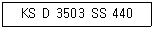
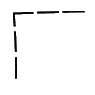
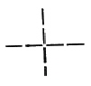
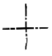
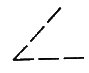
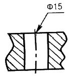
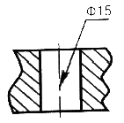
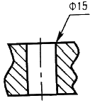
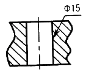

압연기능사 (2010-03-28 기출문제)
1과목: 금속재료일반
1. 알루미늄 실용 합금으로서 Al에 10~13% Si이 함유된 것으로 유동성이 좋으며 모래형 주물에 이용되는 합금의 명칭은?
- 두랄루민
- 실루민
- Y합금
- 코비탈륨
(정답률: 82%)

2. 다음 중 금속의 물리적 성질에 해당되지 않는 것은?
- 비중
- 비열
- 열전도율
- 피로한도
(정답률: 69%)
3. 구상흑연주철의 구상화를 위해 사용되는 접종제가 아닌 것은?
- S
- Ce
- Mg
- Ca
(정답률: 71%)
4. Fe-C 평형상태도에서 나타나지 않는 반응은?
- 공석반응
- 공정반응
- 포석반응
- 포정반응
(정답률: 79%)
5. 강의 표면경화법에 해당되지 않는 것은?
- 침탄법
- 금속침투법
- 마아템퍼링법
- 고주파 경화법
(정답률: 72%)
6. 다음 중 기능성 재료로서 실용하고 있는 가장 대표적인 형상기억합금으로 원자비가 1:1 의 비율로 조성되어 있는 합금은?
- Ti - Ni
- Au - Cd
- Cu - Cd
- Cu – Sn
(정답률: 88%)
7. 시편의 표점간 거리 100mm, 직경 18mm이고, 최대하중 5900kgf에서 절단되었을 때 늘어난 길이가 20mm라 하면 이 때의 연신율(%)은?
- 15
- 20
- 25
- 30
(정답률: 63%)
8. 다음 중 청동과 황동에 대한 설명으로 틀린 것은?
- 청동은 구리와 주석의 합금이다.
- 황동은 구리와 아연의 합금이다.
- 포금은 구리에 8~12% 주석을 함유한 청동으로 포신 재료 등에 사용되었다.
- 톰백은 구리에 5~20%의 아연을 함유한 황동으로, 강도는 높으나 전연성이 없다.
(정답률: 73%)
9. Fe-C 평형상태도에서 자기 변태만으로 짝지어진 것은?
- A0변태, A1변태
- A1변태, A2변태
- A0변태, A2변태
- A3변태, A4 변태
(정답률: 83%)
10. 탄소강에 함유된 원소들의 영향을 설명한 것 중 옳은 것은?
- Mn은 보통 강중에 0.2~0.8% 함유되며, 일부는 α-Fe 중에 고용되고, 나머지는 S와 결합하여 MnS로 된다.
- Cu는 매우 적은 양이 Fe 중에 고용되며, 부식에 대한 저항성을 감소시킨다.
- P는 Fe와 결합하여 Fe3P를 만들고, 결정입자의 미세화를 촉진시킨다.
- Si는 α고용체 중에 고용되어 경도, 인장강도 등을 낮춘다.
(정답률: 69%)
11. 금속의 응고에 대한 설명으로 틀린 것은?
- 과냉의 정도는 냉각속도가 낮을수록 커지며 결정립은 미세해진다.
- 액체 금속은 응고가 시작되면 응고 잠열을 방출한다.
- 금속의 응고시 응고점보다 낮은 온도가 되어서 응고가 시작되는 현상을 과냉이라고 한다.
- 용융금속이 응고할 때 먼저 작은 결정을 만드는 핵이 생기고, 이 핵을 중심으로 수지상정이 발달한다.
(정답률: 67%)
12. 냉간가공과 열간가공을 구분하는 기준은 무엇인가?
- 용융 온도
- 재결정 온도
- 크리프 온도
- 탄성계수 온도
(정답률: 91%)
13. 치수 보조 기호에 대한 설명 중 틀린 것은?
- 반지름은 치수의 수치 앞에 R5와 같이 기입한다.
- 구의 반지름은 치수의 수치 앞에 SR5와 같이 기입한다.
- 30° 의 모따기는 치수의 수치 앞에 C5와 같이 기입한다.
- 판 두께는 치수의 수치 앞에 t5와 같이 기입한다.
(정답률: 85%)
14. 다음 중 도면의 크기가 A1 용지에 해당되는 것은? (단, 단위는 mm 이다.)
- 297×420
- 420×594
- 594×841
- 841×1189
(정답률: 78%)
15. 대상물의 표면으로부터 임의로 채취한 각 부분에서의 표면 거칠기를 나타내는 파라미터인 10점 평균 거칠기 기호로 옳은 것은?
- Ry
- Ra
- Rz
- Rx
(정답률: 80%)
2과목: 금속제도
16. 다음 재료 기호에서 “440”이 의미하는 것은?

- 최저인장강도
- 최고인장강도
- 재료의 호칭번호
- 탄소 함유량
(정답률: 87%)
17. 제1각법과 제3각법의 도면의 위치가 일치하는 것은?
- 평면도, 배면도
- 정면도, 평면도
- 정면도, 배면도
- 배면도, 저면도
(정답률: 71%)
18. 도면에서 굵은 선이 0.35mm일 때 굵은 선과 가는 선 굵기의 합은?
- 0.45mm
- 0.52mm
- 0.53mm
- 0.7mm
(정답률: 68%)
19. 다음 그림 중 선을 그릴 때의 선 연결 방법이 틀린 것은?




(정답률: 76%)
20. 드릴 구멍 치수의 지시선을 표기한 것 중 옳은 것은?




(정답률: 89%)
21. 단면도의 해칭선은 어떤 선을 사용하여 긋는가?
- 파선
- 굵은 실선
- 일점 쇄선
- 가는 실선
(정답률: 63%)
22. 다음 중 축척에 해당하는 척도는?
- 1:1
- 1:2
- 2:1
- 10:1
(정답률: 84%)
23. 나사 각부를 표시하는 선의 종류로 옳은 것은?
- 수나사의 바깥지름과 암나사의 안지름은 굵은 실선으로 그린다.
- 수나사의 골 지름과 암나사의 골 지름은 굵은 실선으로 그린다.
- 수나사와 암나사의 측면 도시에서의 골지름은 굵은 실선으로 그린다.
- 가려선 보이지 않는 나사부는 가는 실선으로 그린다.
(정답률: 67%)
24. 간단한 기계 장치부를 스케치 하려고 할 때 측정 용구에 해당되지 않는 것은?
- 정반
- 스패너
- 각도기
- 버어니어캘리퍼스
(정답률: 86%)
25. 재료의 압연에서 마찰계수를 μ, 접촉각을 θ라 할 때 압연재가 재료를 통과할 조건은?
- μ ≥ tanθ
- μ ≤ tanθ
- μ ≥ cosθ
- μ ≤ cosθ
(정답률: 73%)
26. 다음 중 클링킹(clinking)의 발생원인은?
- 가공 경화한 재료의 연화현상 때문에
- 재료 내·외부의 온도차에 의한 응력 때문에
- 가열속도가 너무 늦어 산화되기 때문에
- 가열온도가 낮아 탈탄이 촉진되기 때문에
(정답률: 74%)
27. 지방산과 글리세린이 주성분인 게이지용의 압연유로 널리 사용되는 것은?
- 올레핀유(Olefin oil)
- 광유(Mineral oil)
- 그리스유(Grease oil)
- 유지(Fat and oil)
(정답률: 81%)
28. 두께 10mm의 동판을 압하율 25%로 압연을 하였을 때 동판의 두께는 몇 mm 인가?
- 5.5
- 6.5
- 7.5
- 8.5
(정답률: 80%)
29. 연료의 연소와 관련되는 내용으로 옳은 것은?
- 화염연소란 증발연소, 분해연소, 표면연소를 말한다.
- 발화점은 점화원을 대었을 때 연소가 시작되는 최저 온도이다.
- 연소에 의해 생성되는 오염물질은 CO, SOx, NOx 등 이다.
- 인화점은 연소가 시작되며 연소열에 의해 연소가 계속 되는 점이다.
(정답률: 70%)
30. 다음 중 냉간압연의 목적으로 틀린 것은?
- 표면을 미려하게 하고 조직을 조대하게 하기 위한 작업이다.
- 열간압연으로 만들 수 없는 박판까지 압연한다.
- 두께를 일정하게 하여 두께 정도가 좋은 제품을 생산 한다.
- 형상이 양호한 제품을 생산한다.
(정답률: 63%)
3과목: 압연기술
31. 압연제품에서 소재의 연성이 부족하여 평판의 가장자리에 발생하는 결함은?
- 에지 크랙
- 웨이브 에지
- 엘리게이터링
- 판 끝의 곡선면
(정답률: 82%)
32. 공형압연설계에서 스트레이트 방식의 결점을 개선하기 위해 공형을 경사시켜 직접 압하를 가하기 쉽게 한 것으로 재료를 공형에 정확히 유도하기 위한 회전 가이드를 장치함으로써 좋은 효과가 있으며 I형강 보다 오히려 레일의 압연에서 볼 수 있는 공형 방식은?
- 다곡법
- 버터플라이 방식
- 다이애거널 방식
- 무압하 변형공형 방식
(정답률: 71%)
33. 워킹빔식 가열로에서 transverse 실린더의 역할로 옳은 것은?
- 스키드를 지지해 준다.
- 운동 빔(beam)의 수평 왕복운동을 작동시킨다.
- 운동 빔(beam)의 수직 상하운동을 작동시킨다.
- 운동 빔(beam)의 냉각수를 작동시킨다.
(정답률: 80%)
34. 탄성한계 이상으로 시편을 변형시켰을 때에는 하중을 제거하더라도 변형의 일부는 회복되나 잔류변형이 남게 되는 변형은?
- 소성변형
- 탄성변형
- 압연변형
- 공칭변형
(정답률: 73%)
35. 요융 아연도금에서 합금층의 성장을 억제하고 유동성을 향상시키는 금속은?
- Al
- Cd
- Sn
- Fe
(정답률: 75%)
36. 완전한 제품을 만든 후에도 표면 조도를 더욱 양호하게 하기 위하여 실시하는 압연은?
- 산세압연
- 열간압연
- 조질압연
- 분괴압연
(정답률: 83%)
37. 냉연강판의 평탄도 관리는 품질관리의 중요한 관리항목 중 하나이다. 평탄도가 양호하도록 조정하는 방법으로 적합하지 않는 것은?
- 롤 벤딩의 조절
- 압하 배분의 조절
- 압하 길이의 조절
- 압연 규격의 다양화
(정답률: 83%)
38. 다음 압연에 관계되는 용어들의 설명으로 틀린 것은?
- 압연재가 물려 들어가는 것을 물림이라 한다.
- 압연 스케줄에 설정된 롤 간격에 따라 결정되는 것을 압하량이라 한다.
- 압연과정에 있어서 롤 축에 수직으로 발생하는 힘을 압연력이라 한다.
- 압연재가 롤 사이로 물려 들어가면 압연기의 각 구조 부분이 느슨해져 롤 간격이 조금 늘어난다. 이러한 현상을 롤 간격이라 한다.
(정답률: 79%)
39. 강재의 용도에 따라 가공방법, 가공정도, 개재물이나 편석의 허용한도를 정해 그것이 실현되도록 제조공정을 설계하고 실시하는 것이 내부결함의 관리이다. 이에 해당되지 않는 것은?
- 성분범위
- 탈산법의 선정
- 슬립마크
- 강괴, 강편의 끝 부분을 잘라내는 기준
(정답률: 68%)
40. 냉연용 소재의 품질구비 조건과 거리가 가장 먼 것은?
- 코일의 재질이 균질할 것
- 치수와 형상이 정확할 것
- 표면에 고착성의 스케일을 가질 것
- 표면에 박리성이 좋은 스케일을 가질 것
(정답률: 80%)
41. 다음 중 조압연기 배열에 관계 없는 것은?
- Semi Continuous(반연속)식
- Full Continuous(전연속)식
- Four Quarter(4/4연속)식
- Cross Couple식
(정답률: 77%)
42. 일반적인 냉연 박판의 제조공정이 옳게 나열된 것은?
- 냉간압연 → 표면청정 → 산세 → 풀림 → 조질압연 → 전단 리코일링
- 냉간압연 → 산세 → 표면청정 → 조질압연 → 풀림 → 전단 리코일링
- 산세 → 풀림 → 표면청정 → 냉간압연 → 조질압연 → 전단 리코일링
- 산세 → 냉간압연 → 표면청정 → 풀림 → 조질압연 → 전단 리코일링
(정답률: 69%)
43. 금속의 재결정온도에 대한 설명으로 틀린 것은?
- 재결정온도는 금속의 종류와 가공정도에 따라 다르다.
- 재결정온도보다 높은 온도에서 압연하는 것을 열간압연이라 한다.
- 재결정온도보다 높은 온도에서 압연하면 강도가 강해진다.
- 재결정온도보다 낮은 온도에서 압연하면 결정입자가 미세해진다.
(정답률: 73%)
44. 압연가공시 롤의 속도와 스트립의 속도가 일치되는 지점은?
- 선진점
- 후진점
- 증립점
- 접촉점
(정답률: 85%)
45. 압연할 때 스키드 마크 부분의 변형 저항으로 인하여 생기는 강판의 주 결함은?
- 표면균열
- 판 두께 편차
- 딱지흠
- 헤어 크랙
(정답률: 62%)
4과목: 압연설비
46. 직경 950mm의 롤을 사용하여 폭 1650mm, 두께 50mm 의 연강 후판을 두께 35mm 로 압연한 후의 폭은 몇 mm 인가? (단, 폭터짐 계수는 0.3 이다.)
- 1630.5
- 1645.5
- 1654.5
- 1664.5
(정답률: 57%)
47. 다음 중 그리수(grease)를 급유하는 경우로서 틀린 것은?
- 마찰면이 고속운동을 하는 부분
- 고하중을 받는 부분
- 액체 급유가 곤란한 부분
- 밀봉이 요구될 때
(정답률: 71%)
48. 냉간압연된 스트립의 표면에 부착한 오염을 세정하는 방법으로서 화학적인 방법이 아닌 것은?
- 용제세정
- 유화세정
- 계면활성제세정
- 전해세정
(정답률: 76%)
49. 압연 롤을 40rpm으로 회전시키는데 필요한 모멘트가 20kg·m일 때 압연기에 필요한 마력(HP)은? (단, 압연 효율은 45% 이다.)
- 약 5.0
- 약 4.5
- 약 2.5
- 약 1.5
(정답률: 53%)
50. 권취기 전면에 설치된 pinch roll 에 대한 설명으로 틀린 것은?
- telescope를 방지하여 권취 형상을 좋게 한다.
- 권취기와의 장력을 유지하여 단단하게 권취되게 한다.
- strip top 이 감기가 쉽게 선단을 구부려 준다.
- 사상압연기에서 발생된 불량한 평탄도를 개선해 준다.
(정답률: 47%)
51. 피니언(pinion)에 사요되는 기어로 톱니를 원통에 새겨 놓은 것으로 원통주위의 톱니가 나선형인 기어는?
- 스퍼기어(spur gear)
- 헤리컬기어(helical gear)
- 베베기어(bevel gear)
- 워엄기어(worm gear)
(정답률: 71%)
52. 압연기 자동제어의 도입효과가 아닌 것은?
- 판두께의 정도향상
- 생산성의 향상
- 압연설비의 단순화
- 압연데이터의 자동기록관리
(정답률: 67%)
53. 가역식과 비교한 연속식(Tandem mill) 압연기의 특징으로 옳은 것은?
- 로트(lot)가 적은 것에 유리하다.
- 각 패스(pass)당 가감속이 필요하다.
- 제조 사이즈가 다양한 경우에 유리하다.
- 일반적으로 고속이고 스탠드(stand)수가 많다.
(정답률: 73%)
54. 디스케일링(Descaling)작업에서 황산 산세법과 비교한 염산 산세법의 특징이 아닌 것은?
- 산세 속도가 빠르다.
- 스케일 표층부부터 산세한다.
- 스케일 브레이커는 필수 설비이다.
- 철분 농도의 증가에 따라 디스케일링 능력이 포화점까지는 커진다.
(정답률: 60%)
55. 연속으로 나오는 냉연 소재를 일정한 길이로 전단하는 설비는?
- 플라잉 시어
- 크롭 시어
- 슬리터 시어
- 사이드 트러밍 시어
(정답률: 46%)
56. 산업안전 보건법에서 안전보건 표지의 색채와 그 용도가 옳게 짝지어진 것은?
- 파랑 – 금지
- 빨강 – 경고
- 노랑 – 지시
- 녹색 – 안내
(정답률: 76%)
57. 스트립의 종방향 분할을 행하고, 폭이 좁은 코일을 생산하는 설비는?
- 조질 라인
- 전단 라인
- 슬리팅 라인
- 리코일리 라인
(정답률: 62%)
58. 권취 완료시점에 권취 소재 외경을 급냉시키고 권취기 내에서 가열된 코일을 냉각하기 위한 냉각 장치는?
- Unit spray(유니트 스프레이)
- Side spray(사이드 스프레이)
- Vertical spray(버티칼 스프레이)
- Track spray(트랙 스프레이)
(정답률: 71%)
59. 선재 공정에서 상부 롤의 직경이 하부 롤의 직경보다 큰 경우 그 이유는 무엇인가?
- 압연 소재가 상향되는 것을 방지하기 위하여
- 압연 소재가 하향되는 것을 밪이하기 위하여
- 소재의 두께 정도를 향상시키기 위하여
- 롤의 원단위를 감소시키기 위하여
(정답률: 74%)
60. 크레인을 사용하여 작업할 때의 크레인 점검내용이 아닌 것은?
- 권과방지장치의 기능
- 브레이크장치의 기능
- 운전장치의 기능
- 비상정지장치의 기능
(정답률: 69%)